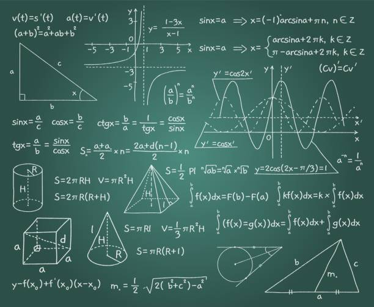

In this unit, students recognize the radian as an alternative unit to the degree for angle measurement, define the radian measure of an angle as the length of the arc that subtends this angle at the center of a unit circle, and develop and apply the relationship between radian and degree measure. Students will also sketch the graphs of f(x) = sinx and f(x) = cosx for angle measures expressed in radians, and determine and describe some key properties (e.g., period of 2π , amplitude of 1) in terms of radians. Students represent a sinusoidal function with an equation, given its graph or its properties, with angles expressed in radians. Students recognize that trigonometric identities are equations that are true for every value in the domain, prove trigonometric identities through the application of reasoning skills, using a variety of relationships, and verify identities using technology.